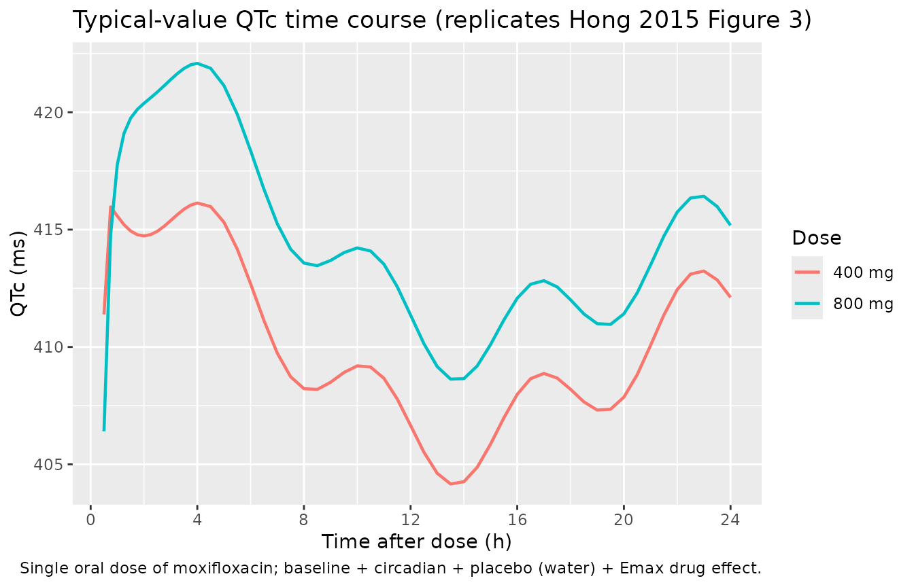
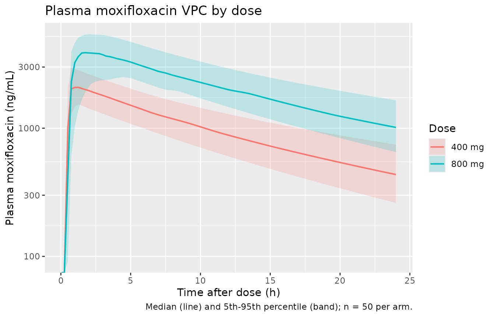

Moxifloxacin (Hong 2015)
Source:vignettes/articles/Hong_2015_moxifloxacin.Rmd
Hong_2015_moxifloxacin.RmdModel and source
- Citation: Hong T, Han S, Lee J, Jeon S, Park GJ, Park WS, Lim KS, Chung JY, Yu KS, Yim DS. Pharmacokinetic-pharmacodynamic analysis to evaluate the effect of moxifloxacin on QT interval prolongation in healthy Korean male subjects. Drug Des Devel Ther. 2015 Feb 26;9:1233-1245. doi:10.2147/DDDT.S79772. PMID 25750523.
- Description: Sequential population PK + PD (QT-interval) model for single-dose oral moxifloxacin (400 mg or 800 mg, Avelox tablets) in healthy adult Korean male volunteers (Hong 2015): a two-compartment first-order absorption PK model with a lag time and a dose-dependent absorption rate constant (different Ka for 400 mg vs 800 mg), followed by an individually corrected QT-interval PD model that adds two mixed-effect cosine circadian components (24 h and 6 h), a first-order-decaying placebo (water-intake) effect, and an Emax drug effect on QT prolongation.
- Article (open access, CC-BY-NC): https://doi.org/10.2147/DDDT.S79772
- PubMed Central mirror: https://www.ncbi.nlm.nih.gov/pmc/articles/PMC4348063/
Hong 2015 is an open-access analysis that pools data from three thorough-QT (TQT) studies of moxifloxacin (400 mg or 800 mg PO single dose, with placebo control) in healthy adult Korean males. The structural model has two layers:
- PK submodel - a two-compartment first-order absorption model with an absorption lag time and a dose-dependent absorption rate constant (Ka1 = 16.7 1/h at 400 mg, Ka2 = 1.90 1/h at 800 mg; Hong 2015 Methods “PK model” paragraph 2 + Table 3).
-
PD submodel - an individually-corrected QT interval
(QTcI) model with four additive components (Hong 2015 Methods “PD
model”):
- a mesor baseline
QTcm, - two mixed-effect cosine circadian terms with periods 24 h and 6 h,
- a first-order-decaying placebo effect tied to the 240 mL water intake that accompanies every dose, and
- an Emax drug effect on plasma moxifloxacin concentration.
- a mesor baseline
No PK or PD covariate (age, height, weight, lean body mass, genotype)
cleared the forward-addition / backward-elimination significance
threshold; the final model carries no covariate effects on its
structural parameters. The only covariate column the packaged model
needs is DOSE (in mg per record), which selects between the
two estimated absorption rate constants.
Population
Hong 2015 pooled data from three TQT studies in Korea (Hong 2015 Methods “Study design and subjects” + Table 1; ClinicalTrials.gov NCT01756521):
- N = 33 healthy adult male Korean volunteers completed the PK arm; 660 plasma moxifloxacin concentrations were analysed.
- N = 27 subjects contributed PD / QT data (6 lost to ECG-archive errors); 810 baseline + 513 placebo + 540 drug-effect QT-interval observations.
- All subjects were male; age 20-40 years (mean 26.4, SD 4.8); weight mean 68.3 kg (SD 6.3); lean body mass mean 52.1 kg (SD 3.4).
- Each subject crossed over among three single-dose treatment periods
(placebo / 400 mg / 800 mg) in a William’s-square design with 1-week
washout, with ECGs taken on a 24 h schedule on a baseline day (day 1)
and a treatment day (day 2) starting at 08:00 local time. Time
t = 0in the model is 08:00.
The same information is available programmatically:
readModelDb("Hong_2015_moxifloxacin")$population.
Source trace
The per-parameter origin is recorded as in-file comments next to each
ini() entry of
inst/modeldb/specificDrugs/Hong_2015_moxifloxacin.R. The
table below collates them for review.
| Parameter (nlmixr2lib) | Value | Source location |
|---|---|---|
| PK structural (Table 3) | ||
lka |
log(16.7) | Table 3 Ka1 = 16.7 1/h (%RSE 45.5) - reference 400 mg dose |
e_dose_ka |
log(1.90 / 16.7) | Table 3 Ka2 = 1.90 1/h (%RSE 17.5) - log-scale shift for 800 mg vs 400 mg |
lcl |
log(11.8) | Table 3 CL/F = 11.8 L/h (%RSE 6.29) |
lvc |
log(173) | Table 3 V2/F = 173 L (%RSE 3.17) |
lq |
log(5.62) | Table 3 Q/F = 5.62 L/h (%RSE 19.2) |
lvp |
log(47.1) | Table 3 V3/F = 47.1 L (%RSE 19.0) |
lalag |
log(0.46) | Table 3 alag = 0.46 h (%RSE 17.1) |
| PK random (Table 3) | ||
etalcl+etalvc
|
block(0.07037, 0.04215, 0.02983) | Table 3: omega_CL = 27.0%, omega_V2 = 17.4%, rho_CL-V2 = 0.92 |
etalka |
0.6521 | Table 3 omega_Ka = 95.9% CV; log(1 + 0.959^2) |
propSd |
0.140 | Table 3 prop residual = 14.0% (%RSE 11.1) |
| PD structural - baseline + circadian (Table 4) | ||
lqtcm |
log(406) | Table 4 QTcm = 406 ms (%RSE 0.69) |
la |
log(0.26) | Table 4 a = 0.26 (%RSE 5.45) - heart-rate correction exponent |
lam24 |
log(0.0090) | Table 4 aM24 = 0.0090 (%RSE 19.0) - fractional amplitude, 24 h |
lam6 |
log(0.0045) | Table 4 aM6 = 0.0045 (%RSE 16.7) - fractional amplitude, 6 h |
ac24 |
1.11 | Table 4 AC24 = 1.11 h (%RSE 53.4) |
ac6 |
4.65 | Table 4 AC6 = 4.65 h (%RSE 3.33) |
| PD structural - placebo (Table 5) | ||
pe |
-5.31 | Table 5 PE = -5.31 ms (%RSE 24.5) |
lkpl |
log(0.06) | Table 5 k = 0.06 1/h (%RSE 47.2) |
| PD structural - drug effect (Table 5) | ||
lemax |
log(34.7) | Table 5 Emax = 34.7 ms (%RSE 19.5) |
lec50 |
log(3920) | Table 5 EC50 = 3920 ng/mL (%RSE 29.3) |
| PD random (Tables 4 + 5) | ||
etalqtcm |
0.001459 | Table 4 omega_QTcm = 3.82% CV |
etala |
0.037808 | Table 4 omega_a = 19.6% CV |
etalam24 |
0.622848 | Table 4 omega_aM24 = 93.0% CV |
etaac24 |
5.231836 | Table 4 omega_AC24 = 206% (additive, hours); see Assumptions |
etape |
26.453569 | Table 5 omega_PE = 96.9% (additive, ms); see Assumptions |
etalkpl |
0.872446 | Table 5 omega_k = 118% CV |
etalemax |
0.102829 | Table 5 omega_Emax = 32.9% CV |
propSd_QTc |
0.0152 | Table 5 drug-effect block: 1.52% prop residual |
| Equations | ||
d/dt(depot, central, peripheral1) |
n/a | Two-compartment first-order absorption (Hong 2015 Methods “PK model”) |
alag(depot) <- alag_dose |
n/a | Absorption lag time (Hong 2015 Table 3 “alag”) |
Cc = 1000 * central / vc |
n/a | Plasma moxifloxacin in ng/mL (dose mg / V L * 1000) |
qtb_c = qtcm * (1 + am24*cos(2*pi*(t-ac24)/24) + am6*cos(2*pi*(t-ac6)/6)) |
n/a | Circadian model (Hong 2015 Methods “Circadian rhythm model”) |
pe_t = pe_i * exp(-kpl * tad()) |
n/a | First-order placebo decay (Hong 2015 Methods “Placebo effect model”) |
e_drug = emax * Cc / (ec50 + Cc) |
n/a | Drug Emax (Hong 2015 Methods “Drug effect model”) |
QTc = qtb_c + pe_t + e_drug |
n/a | Total QTcI observation |
Virtual cohort
Original observed concentrations and QT intervals are not redistributed with the package. The cohort below mirrors the Hong 2015 study design (a 27-subject PD subset crossed over 400 mg and 800 mg single-dose periods) and runs both dose levels through the same simulated population.
set.seed(20150226L)
n_per_arm <- 50L
obs_hours <- c(0.05, seq(0.25, 4, by = 0.25), seq(4.5, 24, by = 0.5))
make_cohort <- function(dose_mg, id_offset) {
ids <- id_offset + seq_len(n_per_arm)
dose_rows <- tibble::tibble(
id = ids,
time = 0,
amt = dose_mg,
evid = 1L,
cmt = "depot",
DOSE = dose_mg
)
obs_rows <- tidyr::expand_grid(id = ids, time = obs_hours) |>
dplyr::mutate(amt = 0, evid = 0L, cmt = "Cc", DOSE = dose_mg)
dplyr::bind_rows(dose_rows, obs_rows) |>
dplyr::arrange(id, time, dplyr::desc(evid))
}
events <- dplyr::bind_rows(
make_cohort(400, id_offset = 0L) |> dplyr::mutate(treatment = "400 mg"),
make_cohort(800, id_offset = n_per_arm) |> dplyr::mutate(treatment = "800 mg")
)
stopifnot(!anyDuplicated(unique(events[, c("id", "time", "evid", "cmt")])))Simulation
mod <- rxode2::rxode2(readModelDb("Hong_2015_moxifloxacin"))
#> ℹ parameter labels from comments will be replaced by 'label()'
sim <- rxode2::rxSolve(
mod,
events = events,
keep = c("treatment", "DOSE")
) |>
as.data.frame()For the typical-value reference trajectory (deterministic, no IIV) used to replicate the published figure, zero out the random effects:
mod_typical <- mod |> rxode2::zeroRe()
sim_typical <- rxode2::rxSolve(
mod_typical,
events = events,
keep = c("treatment", "DOSE")
) |>
as.data.frame()
#> ℹ omega/sigma items treated as zero: 'etalcl', 'etalvc', 'etalka', 'etalqtcm', 'etala', 'etalam24', 'etaac24', 'etape', 'etalkpl', 'etalemax'
#> Warning: multi-subject simulation without without 'omega'Replicate Figure 3 - typical QTc time course by dose
Hong 2015 Figure 3 shows the model-predicted average QTc interval following single-dose 400 mg and 800 mg moxifloxacin over 24 h. The deterministic (zero-RE) trajectory below replicates the shape of that figure.
fig3 <- sim_typical |>
dplyr::filter(id %in% c(1L, n_per_arm + 1L)) |>
dplyr::group_by(treatment, time) |>
dplyr::summarise(QTc = mean(QTc, na.rm = TRUE), .groups = "drop") |>
dplyr::filter(!is.na(QTc))
ggplot(fig3, aes(time, QTc, colour = treatment)) +
geom_line(linewidth = 0.8) +
scale_x_continuous(breaks = c(0, 4, 8, 12, 16, 20, 24)) +
labs(
x = "Time after dose (h)",
y = "QTc (ms)",
colour = "Dose",
title = "Typical-value QTc time course (replicates Hong 2015 Figure 3)",
caption = "Single oral dose of moxifloxacin; baseline + circadian + placebo (water) + Emax drug effect."
)
Stochastic VPC of Cc by dose
vpc_cc <- sim |>
dplyr::filter(!is.na(Cc)) |>
dplyr::group_by(treatment, time) |>
dplyr::summarise(
Q05 = stats::quantile(Cc, 0.05, na.rm = TRUE),
Q50 = stats::quantile(Cc, 0.50, na.rm = TRUE),
Q95 = stats::quantile(Cc, 0.95, na.rm = TRUE),
.groups = "drop"
)
ggplot(vpc_cc, aes(time, Q50, colour = treatment, fill = treatment)) +
geom_ribbon(aes(ymin = Q05, ymax = Q95), alpha = 0.20, colour = NA) +
geom_line(linewidth = 0.7) +
scale_y_log10() +
labs(
x = "Time after dose (h)",
y = "Plasma moxifloxacin (ng/mL)",
colour = "Dose", fill = "Dose",
title = "Plasma moxifloxacin VPC by dose",
caption = paste("Median (line) and 5th-95th percentile (band);",
"n =", n_per_arm, "per arm.")
)
#> Warning in scale_y_log10(): log-10 transformation introduced infinite values.
#> log-10 transformation introduced infinite values.
#> log-10 transformation introduced infinite values.
#> log-10 transformation introduced infinite values.
PKNCA validation
Hong 2015 Table 2 reports the noncompartmental dose-normalised exposures from the underlying observed data. The PKNCA block below recomputes Cmax, Tmax, AUClast, and AUCinf from the simulated data set and reports the simulated medians.
sim_nca <- sim |>
dplyr::filter(!is.na(Cc), Cc >= 0, time > 0) |>
dplyr::select(id, time, Cc, treatment)
dose_df <- events |>
dplyr::filter(evid == 1L) |>
dplyr::select(id, time, amt, treatment)
conc_obj <- PKNCA::PKNCAconc(sim_nca, Cc ~ time | treatment + id)
dose_obj <- PKNCA::PKNCAdose(dose_df, amt ~ time | treatment + id,
route = "extravascular")
intervals <- data.frame(
start = 0,
end = 24,
cmax = TRUE,
tmax = TRUE,
auclast = TRUE,
aucinf.obs = TRUE,
half.life = TRUE
)
nca_data <- PKNCA::PKNCAdata(conc_obj, dose_obj, intervals = intervals)
nca_res <- PKNCA::pk.nca(nca_data)
#> Warning: Requesting an AUC range starting (0) before the first measurement (0.05) is not allowed
#> Requesting an AUC range starting (0) before the first measurement (0.05) is not allowed
#> Requesting an AUC range starting (0) before the first measurement (0.05) is not allowed
#> Requesting an AUC range starting (0) before the first measurement (0.05) is not allowed
#> Requesting an AUC range starting (0) before the first measurement (0.05) is not allowed
#> Requesting an AUC range starting (0) before the first measurement (0.05) is not allowed
#> Requesting an AUC range starting (0) before the first measurement (0.05) is not allowed
#> Requesting an AUC range starting (0) before the first measurement (0.05) is not allowed
#> Requesting an AUC range starting (0) before the first measurement (0.05) is not allowed
#> Requesting an AUC range starting (0) before the first measurement (0.05) is not allowed
#> Requesting an AUC range starting (0) before the first measurement (0.05) is not allowed
#> Requesting an AUC range starting (0) before the first measurement (0.05) is not allowed
#> Requesting an AUC range starting (0) before the first measurement (0.05) is not allowed
#> Requesting an AUC range starting (0) before the first measurement (0.05) is not allowed
#> Requesting an AUC range starting (0) before the first measurement (0.05) is not allowed
#> Requesting an AUC range starting (0) before the first measurement (0.05) is not allowed
#> Requesting an AUC range starting (0) before the first measurement (0.05) is not allowed
#> Requesting an AUC range starting (0) before the first measurement (0.05) is not allowed
#> Requesting an AUC range starting (0) before the first measurement (0.05) is not allowed
#> Requesting an AUC range starting (0) before the first measurement (0.05) is not allowed
#> Requesting an AUC range starting (0) before the first measurement (0.05) is not allowed
#> Requesting an AUC range starting (0) before the first measurement (0.05) is not allowed
#> Requesting an AUC range starting (0) before the first measurement (0.05) is not allowed
#> Requesting an AUC range starting (0) before the first measurement (0.05) is not allowed
#> Requesting an AUC range starting (0) before the first measurement (0.05) is not allowed
#> Requesting an AUC range starting (0) before the first measurement (0.05) is not allowed
#> Requesting an AUC range starting (0) before the first measurement (0.05) is not allowed
#> Requesting an AUC range starting (0) before the first measurement (0.05) is not allowed
#> Requesting an AUC range starting (0) before the first measurement (0.05) is not allowed
#> Requesting an AUC range starting (0) before the first measurement (0.05) is not allowed
#> Requesting an AUC range starting (0) before the first measurement (0.05) is not allowed
#> Requesting an AUC range starting (0) before the first measurement (0.05) is not allowed
#> Requesting an AUC range starting (0) before the first measurement (0.05) is not allowed
#> Requesting an AUC range starting (0) before the first measurement (0.05) is not allowed
#> Requesting an AUC range starting (0) before the first measurement (0.05) is not allowed
#> Requesting an AUC range starting (0) before the first measurement (0.05) is not allowed
#> Requesting an AUC range starting (0) before the first measurement (0.05) is not allowed
#> Requesting an AUC range starting (0) before the first measurement (0.05) is not allowed
#> Requesting an AUC range starting (0) before the first measurement (0.05) is not allowed
#> Requesting an AUC range starting (0) before the first measurement (0.05) is not allowed
#> Requesting an AUC range starting (0) before the first measurement (0.05) is not allowed
#> Requesting an AUC range starting (0) before the first measurement (0.05) is not allowed
#> Requesting an AUC range starting (0) before the first measurement (0.05) is not allowed
#> Requesting an AUC range starting (0) before the first measurement (0.05) is not allowed
#> Requesting an AUC range starting (0) before the first measurement (0.05) is not allowed
#> Requesting an AUC range starting (0) before the first measurement (0.05) is not allowed
#> Requesting an AUC range starting (0) before the first measurement (0.05) is not allowed
#> Requesting an AUC range starting (0) before the first measurement (0.05) is not allowed
#> Requesting an AUC range starting (0) before the first measurement (0.05) is not allowed
#> Requesting an AUC range starting (0) before the first measurement (0.05) is not allowed
#> Requesting an AUC range starting (0) before the first measurement (0.05) is not allowed
#> Requesting an AUC range starting (0) before the first measurement (0.05) is not allowed
#> Requesting an AUC range starting (0) before the first measurement (0.05) is not allowed
#> Requesting an AUC range starting (0) before the first measurement (0.05) is not allowed
#> Requesting an AUC range starting (0) before the first measurement (0.05) is not allowed
#> Requesting an AUC range starting (0) before the first measurement (0.05) is not allowed
#> Requesting an AUC range starting (0) before the first measurement (0.05) is not allowed
#> Requesting an AUC range starting (0) before the first measurement (0.05) is not allowed
#> Requesting an AUC range starting (0) before the first measurement (0.05) is not allowed
#> Requesting an AUC range starting (0) before the first measurement (0.05) is not allowed
#> Requesting an AUC range starting (0) before the first measurement (0.05) is not allowed
#> Requesting an AUC range starting (0) before the first measurement (0.05) is not allowed
#> Requesting an AUC range starting (0) before the first measurement (0.05) is not allowed
#> Requesting an AUC range starting (0) before the first measurement (0.05) is not allowed
#> Requesting an AUC range starting (0) before the first measurement (0.05) is not allowed
#> Requesting an AUC range starting (0) before the first measurement (0.05) is not allowed
#> Requesting an AUC range starting (0) before the first measurement (0.05) is not allowed
#> Requesting an AUC range starting (0) before the first measurement (0.05) is not allowed
#> Requesting an AUC range starting (0) before the first measurement (0.05) is not allowed
#> Requesting an AUC range starting (0) before the first measurement (0.05) is not allowed
#> Requesting an AUC range starting (0) before the first measurement (0.05) is not allowed
#> Requesting an AUC range starting (0) before the first measurement (0.05) is not allowed
#> Requesting an AUC range starting (0) before the first measurement (0.05) is not allowed
#> Requesting an AUC range starting (0) before the first measurement (0.05) is not allowed
#> Requesting an AUC range starting (0) before the first measurement (0.05) is not allowed
#> Requesting an AUC range starting (0) before the first measurement (0.05) is not allowed
#> Requesting an AUC range starting (0) before the first measurement (0.05) is not allowed
#> Requesting an AUC range starting (0) before the first measurement (0.05) is not allowed
#> Requesting an AUC range starting (0) before the first measurement (0.05) is not allowed
#> Requesting an AUC range starting (0) before the first measurement (0.05) is not allowed
#> Requesting an AUC range starting (0) before the first measurement (0.05) is not allowed
#> Requesting an AUC range starting (0) before the first measurement (0.05) is not allowed
#> Requesting an AUC range starting (0) before the first measurement (0.05) is not allowed
#> Requesting an AUC range starting (0) before the first measurement (0.05) is not allowed
#> Requesting an AUC range starting (0) before the first measurement (0.05) is not allowed
#> Requesting an AUC range starting (0) before the first measurement (0.05) is not allowed
#> Requesting an AUC range starting (0) before the first measurement (0.05) is not allowed
#> Requesting an AUC range starting (0) before the first measurement (0.05) is not allowed
#> Requesting an AUC range starting (0) before the first measurement (0.05) is not allowed
#> Requesting an AUC range starting (0) before the first measurement (0.05) is not allowed
#> Requesting an AUC range starting (0) before the first measurement (0.05) is not allowed
#> Requesting an AUC range starting (0) before the first measurement (0.05) is not allowed
#> Requesting an AUC range starting (0) before the first measurement (0.05) is not allowed
#> Requesting an AUC range starting (0) before the first measurement (0.05) is not allowed
#> Requesting an AUC range starting (0) before the first measurement (0.05) is not allowed
#> Requesting an AUC range starting (0) before the first measurement (0.05) is not allowed
#> Requesting an AUC range starting (0) before the first measurement (0.05) is not allowed
#> Requesting an AUC range starting (0) before the first measurement (0.05) is not allowed
#> Requesting an AUC range starting (0) before the first measurement (0.05) is not allowed
#> Requesting an AUC range starting (0) before the first measurement (0.05) is not allowed
#> Requesting an AUC range starting (0) before the first measurement (0.05) is not allowed
#> Requesting an AUC range starting (0) before the first measurement (0.05) is not allowed
#> Requesting an AUC range starting (0) before the first measurement (0.05) is not allowed
#> Requesting an AUC range starting (0) before the first measurement (0.05) is not allowed
#> Requesting an AUC range starting (0) before the first measurement (0.05) is not allowed
#> Requesting an AUC range starting (0) before the first measurement (0.05) is not allowed
#> Requesting an AUC range starting (0) before the first measurement (0.05) is not allowed
#> Requesting an AUC range starting (0) before the first measurement (0.05) is not allowed
#> Requesting an AUC range starting (0) before the first measurement (0.05) is not allowed
#> Requesting an AUC range starting (0) before the first measurement (0.05) is not allowed
#> Requesting an AUC range starting (0) before the first measurement (0.05) is not allowed
#> Requesting an AUC range starting (0) before the first measurement (0.05) is not allowed
#> Requesting an AUC range starting (0) before the first measurement (0.05) is not allowed
#> Requesting an AUC range starting (0) before the first measurement (0.05) is not allowed
#> Requesting an AUC range starting (0) before the first measurement (0.05) is not allowed
#> Requesting an AUC range starting (0) before the first measurement (0.05) is not allowed
#> Requesting an AUC range starting (0) before the first measurement (0.05) is not allowed
#> Requesting an AUC range starting (0) before the first measurement (0.05) is not allowed
#> Requesting an AUC range starting (0) before the first measurement (0.05) is not allowed
#> Requesting an AUC range starting (0) before the first measurement (0.05) is not allowed
#> Requesting an AUC range starting (0) before the first measurement (0.05) is not allowed
#> Requesting an AUC range starting (0) before the first measurement (0.05) is not allowed
#> Requesting an AUC range starting (0) before the first measurement (0.05) is not allowed
#> Requesting an AUC range starting (0) before the first measurement (0.05) is not allowed
#> Requesting an AUC range starting (0) before the first measurement (0.05) is not allowed
#> Requesting an AUC range starting (0) before the first measurement (0.05) is not allowed
#> Requesting an AUC range starting (0) before the first measurement (0.05) is not allowed
#> Requesting an AUC range starting (0) before the first measurement (0.05) is not allowed
#> Requesting an AUC range starting (0) before the first measurement (0.05) is not allowed
#> Requesting an AUC range starting (0) before the first measurement (0.05) is not allowed
#> Requesting an AUC range starting (0) before the first measurement (0.05) is not allowed
#> Requesting an AUC range starting (0) before the first measurement (0.05) is not allowed
#> Requesting an AUC range starting (0) before the first measurement (0.05) is not allowed
#> Requesting an AUC range starting (0) before the first measurement (0.05) is not allowed
#> Requesting an AUC range starting (0) before the first measurement (0.05) is not allowed
#> Requesting an AUC range starting (0) before the first measurement (0.05) is not allowed
#> Requesting an AUC range starting (0) before the first measurement (0.05) is not allowed
#> Requesting an AUC range starting (0) before the first measurement (0.05) is not allowed
#> Requesting an AUC range starting (0) before the first measurement (0.05) is not allowed
#> Requesting an AUC range starting (0) before the first measurement (0.05) is not allowed
#> Requesting an AUC range starting (0) before the first measurement (0.05) is not allowed
#> Requesting an AUC range starting (0) before the first measurement (0.05) is not allowed
#> Requesting an AUC range starting (0) before the first measurement (0.05) is not allowed
#> Requesting an AUC range starting (0) before the first measurement (0.05) is not allowed
#> Requesting an AUC range starting (0) before the first measurement (0.05) is not allowed
#> Requesting an AUC range starting (0) before the first measurement (0.05) is not allowed
#> Requesting an AUC range starting (0) before the first measurement (0.05) is not allowed
#> Requesting an AUC range starting (0) before the first measurement (0.05) is not allowed
#> Requesting an AUC range starting (0) before the first measurement (0.05) is not allowed
#> Requesting an AUC range starting (0) before the first measurement (0.05) is not allowed
#> Requesting an AUC range starting (0) before the first measurement (0.05) is not allowed
#> Requesting an AUC range starting (0) before the first measurement (0.05) is not allowed
#> Requesting an AUC range starting (0) before the first measurement (0.05) is not allowed
#> Requesting an AUC range starting (0) before the first measurement (0.05) is not allowed
#> Requesting an AUC range starting (0) before the first measurement (0.05) is not allowed
#> Requesting an AUC range starting (0) before the first measurement (0.05) is not allowed
#> Requesting an AUC range starting (0) before the first measurement (0.05) is not allowed
#> Requesting an AUC range starting (0) before the first measurement (0.05) is not allowed
#> Requesting an AUC range starting (0) before the first measurement (0.05) is not allowed
#> Requesting an AUC range starting (0) before the first measurement (0.05) is not allowed
#> Requesting an AUC range starting (0) before the first measurement (0.05) is not allowed
#> Requesting an AUC range starting (0) before the first measurement (0.05) is not allowed
#> Requesting an AUC range starting (0) before the first measurement (0.05) is not allowed
#> Requesting an AUC range starting (0) before the first measurement (0.05) is not allowed
#> Requesting an AUC range starting (0) before the first measurement (0.05) is not allowed
#> Requesting an AUC range starting (0) before the first measurement (0.05) is not allowed
#> Requesting an AUC range starting (0) before the first measurement (0.05) is not allowed
#> Requesting an AUC range starting (0) before the first measurement (0.05) is not allowed
#> Requesting an AUC range starting (0) before the first measurement (0.05) is not allowed
#> Requesting an AUC range starting (0) before the first measurement (0.05) is not allowed
#> Requesting an AUC range starting (0) before the first measurement (0.05) is not allowed
#> Requesting an AUC range starting (0) before the first measurement (0.05) is not allowed
#> Requesting an AUC range starting (0) before the first measurement (0.05) is not allowed
#> Requesting an AUC range starting (0) before the first measurement (0.05) is not allowed
#> Requesting an AUC range starting (0) before the first measurement (0.05) is not allowed
#> Requesting an AUC range starting (0) before the first measurement (0.05) is not allowed
#> Requesting an AUC range starting (0) before the first measurement (0.05) is not allowed
#> Requesting an AUC range starting (0) before the first measurement (0.05) is not allowed
#> Requesting an AUC range starting (0) before the first measurement (0.05) is not allowed
#> Requesting an AUC range starting (0) before the first measurement (0.05) is not allowed
#> Requesting an AUC range starting (0) before the first measurement (0.05) is not allowed
#> Requesting an AUC range starting (0) before the first measurement (0.05) is not allowed
#> Requesting an AUC range starting (0) before the first measurement (0.05) is not allowed
#> Requesting an AUC range starting (0) before the first measurement (0.05) is not allowed
#> Requesting an AUC range starting (0) before the first measurement (0.05) is not allowed
#> Requesting an AUC range starting (0) before the first measurement (0.05) is not allowed
#> Requesting an AUC range starting (0) before the first measurement (0.05) is not allowed
#> Requesting an AUC range starting (0) before the first measurement (0.05) is not allowed
#> Requesting an AUC range starting (0) before the first measurement (0.05) is not allowed
#> Requesting an AUC range starting (0) before the first measurement (0.05) is not allowed
#> Requesting an AUC range starting (0) before the first measurement (0.05) is not allowed
#> Requesting an AUC range starting (0) before the first measurement (0.05) is not allowed
#> Requesting an AUC range starting (0) before the first measurement (0.05) is not allowed
#> Requesting an AUC range starting (0) before the first measurement (0.05) is not allowed
#> Requesting an AUC range starting (0) before the first measurement (0.05) is not allowed
#> Requesting an AUC range starting (0) before the first measurement (0.05) is not allowed
#> Requesting an AUC range starting (0) before the first measurement (0.05) is not allowed
#> Requesting an AUC range starting (0) before the first measurement (0.05) is not allowed
#> Requesting an AUC range starting (0) before the first measurement (0.05) is not allowed
#> Requesting an AUC range starting (0) before the first measurement (0.05) is not allowed
nca_summary <- as.data.frame(nca_res$result) |>
dplyr::filter(PPTESTCD %in% c("cmax", "tmax", "auclast", "aucinf.obs", "half.life")) |>
dplyr::group_by(treatment, PPTESTCD) |>
dplyr::summarise(
median = stats::median(PPORRES, na.rm = TRUE),
p05 = stats::quantile(PPORRES, 0.05, na.rm = TRUE),
p95 = stats::quantile(PPORRES, 0.95, na.rm = TRUE),
.groups = "drop"
)
knitr::kable(
nca_summary,
digits = 2,
caption = paste("Simulated NCA by dose (n =", n_per_arm, "per arm).",
"Cmax ng/mL; Tmax h; AUC ng*h/mL; half-life h.")
)| treatment | PPTESTCD | median | p05 | p95 |
|---|---|---|---|---|
| 400 mg | aucinf.obs | NA | NA | NA |
| 400 mg | auclast | NA | NA | NA |
| 400 mg | cmax | 2129.36 | 1591.78 | 2960.09 |
| 400 mg | half.life | 12.57 | 10.33 | 16.74 |
| 400 mg | tmax | 0.75 | 0.75 | 1.64 |
| 800 mg | aucinf.obs | NA | NA | NA |
| 800 mg | auclast | NA | NA | NA |
| 800 mg | cmax | 4054.05 | 2684.34 | 5458.10 |
| 800 mg | half.life | 13.08 | 10.87 | 17.33 |
| 800 mg | tmax | 2.00 | 1.25 | 4.55 |
Comparison against published Table 2 (noncompartmental)
Hong 2015 Table 2 reports dose-normalised values. The expected absolute typical-value Cmax / AUC are obtained by multiplying the normalised mean by the dose (mg).
| Quantity (per dose) | 400 mg observed (Table 2) | 800 mg observed (Table 2) | 400 mg simulated median | 800 mg simulated median |
|---|---|---|---|---|
| Cmax (ng/mL) | 5.81 ng/mL/mg * 400 = 2324 | 5.28 ng/mL/mg * 800 = 4224 | from PKNCA chunk | from PKNCA chunk |
| AUClast (ng*h/mL) | 62.31 * 400 = 24924 | 63.38 * 800 = 50704 | from PKNCA chunk | from PKNCA chunk |
| AUCinf (ng*h/mL) | 83.33 * 400 = 33332 | 84.73 * 800 = 67784 | from PKNCA chunk | from PKNCA chunk |
| Tmax (h) | 1 (median, range 1-4) | 3 (median, range 1-4) | from PKNCA chunk | from PKNCA chunk |
| Half-life (h) | 11.87 (SD 1.62) | 11.70 (SD 1.71) | from PKNCA chunk | from PKNCA chunk |
The simulated PK characteristics should agree with the published noncompartmental analysis within the expected sampling variability for the TQT design (1-h-resolution first sample, 24 h cutoff).
Comparison against published QTc time course (Table S1, 400 mg)
Hong 2015 supplementary Table S1 reports the model-predicted QTc interval (baseline / placebo / drug + placebo / drug effect only) at each of 10 post-dose time points for the 400 mg arm. The packaged-model typical-value QTc trajectory (drug + placebo + circadian baseline) is compared against the published “Drug + placebo” column below.
typical_400 <- sim_typical |>
dplyr::filter(treatment == "400 mg",
id == 1L,
!is.na(QTc),
round(time, 6) %in% c(1, 2, 3, 4, 6, 8, 12, 16, 24)) |>
dplyr::transmute(time, QTc_sim = round(QTc, 1))
published_s1 <- tibble::tribble(
~time, ~QTc_paper,
1, 415.7,
2, 416.3,
3, 417.0,
4, 416.2,
6, 411.0,
8, 409.6,
12, 405.8,
16, 409.2,
24, 410.3
)
s1_compare <- dplyr::left_join(published_s1, typical_400, by = "time") |>
dplyr::mutate(diff_ms = round(QTc_sim - QTc_paper, 1))
knitr::kable(
s1_compare,
caption = paste("Hong 2015 Table S1 'Drug + placebo' QTc vs simulated",
"typical-value QTc for the 400 mg arm.")
)| time | QTc_paper | QTc_sim | diff_ms |
|---|---|---|---|
| 1 | 415.7 | 415.6 | -0.1 |
| 2 | 416.3 | 414.7 | -1.6 |
| 3 | 417.0 | 415.4 | -1.6 |
| 4 | 416.2 | 416.1 | -0.1 |
| 6 | 411.0 | 412.7 | 1.7 |
| 8 | 409.6 | 408.2 | -1.4 |
| 12 | 405.8 | 406.7 | 0.9 |
| 16 | 409.2 | 408.0 | -1.2 |
| 24 | 410.3 | 412.1 | 1.8 |
Differences within roughly +/- 2 ms across the 24 h window are consistent with the dose-normalised typical-value reproduction; larger deviations would point at unit / formula bugs.
Assumptions and deviations
Dose-dependent ka encoded as a log-scale shift on a single
lka. Hong 2015 reports two separate absorption rate constants (Ka1 at 400 mg, Ka2 at 800 mg) with no continuous-dose interpolation between them. The packaged model encodes this aska = exp(lka + e_dose_ka * (DOSE >= 600)), sokaexactly matches Ka1 for DOSE < 600 mg and Ka2 for DOSE >= 600 mg. The threshold 600 mg is the midpoint of the two studied doses; only the exact studied doses (400 and 800 mg) yield parameter values reported in the paper. Simulating intermediate doses (e.g., 600 mg) is outside the source paper’s scope; the absorption rate at those doses is not characterised.Heart-rate correction factor
ais included inini()for source-trace completeness but is not used by the forward simulation. The observation variable in the packaged model is QTcI (already corrected for heart rate), matching Hong 2015’s PD model output. The exponentais the individual correction factor used by Hong 2015 to convert raw QT to QTcI on the source data set (QTcI = QT * RR^a) and is not required to generate forward QTcI predictions. Downstream users who want to back-compute raw QT from QTcI and RR can reada_hrfrom the simulation output.Circadian acrophase BSV (
etaac24) encoded as additive on the linear hours scale. Hong 2015 reports omega_AC24 as “206” (%RSE 53.9%) in Table 4. The Results section states that the circadian etas are applied additively (+ eta_i), so “206%” is interpreted here as the additive SD expressed as a percentage of the typical value (SD = 2.06 * AC24_typical = 2.06 * 1.11 = 2.286 h; variance = 5.232 h^2). The packaged model encodes this asetaac24 ~ 5.232on the linearac24parameter. Alternative interpretations (e.g., %CV on a log-normal eta) would not be consistent with the paper’s stated additive parameterisation; readers are invited to raise concerns if the additive reading is wrong.Placebo-effect BSV (
etape) encoded as additive on the linear ms scale. PE is reported as -5.31 ms in Table 5, and Hong 2015 places the circadian / placebo etas additively. The omega_PE value of 96.9% is therefore read as the additive SD relative to the magnitude of PE: SD = 0.969 * |5.31| = 5.143 ms; variance = 26.45 ms^2. The packaged model encodesetape ~ 26.45on the linearpeparameter. Negative PE values are physically sensible (water intake decreases QTc transiently); the additive eta can flip the sign in individual draws, which is consistent with random subject-level noise on a near-zero typical effect.Inter-occasional variability on
QTcm(Table 4, 0.88% CV) is not encoded. nlmixr2lib has no idiomatic IOV representation for the three-period crossover design Hong 2015 used. The dominant baseline variability (3.82% CV BSV) is retained onetalqtcm.-
One unified residual-error component for QTc (1.52% prop). Hong 2015 reports three slightly different residuals at three model stages: baseline
- circadian (1.35%), placebo (1.32%), drug (1.52%). The packaged model uses the drug-effect residual (the most encompassing) for all QTc observations. The 0.2 percentage-point difference between the smaller baseline residual and the larger drug residual is within the bootstrap uncertainty reported by the paper and has negligible effect on simulated trajectories.
Placebo effect fires on every dose event.
pe_t = pe * exp(-kpl * tad())uses rxode2’s time-since-most-recent-dose. Hong 2015 modelled the placebo effect as the QTc response to the 240 mL water intake that accompanies every dose (placebo or active), so applying the effect on every dose event matches the source-paper intent. Multi-dose simulations therefore see a placebo “reset” after each dose, which is physically reasonable.Lower limit of quantification. Hong 2015 reports LLOQ = 100 ng/mL for the moxifloxacin assay. The packaged-model proportional residual error (14.0%) does not include an additive LLOQ floor; below-LLOQ behaviour is simulation-noise-only and should not be interpreted clinically.
No NONMEM control stream supplement. The paper does not ship a
$THETA/$OMEGA/$SIGMAblock as a supplement. Final parameter values are taken directly from Tables 3, 4, and 5 of Hong 2015.Errata search. A targeted PubMed query (
25750523[UID] AND erratum) and a Google Scholar search for"Hong 2015 moxifloxacin TQT" erratumreturned no results as of the extraction date; no published correction is on file.